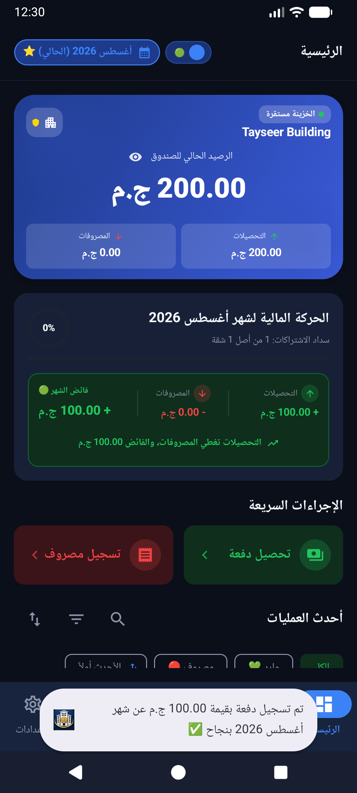
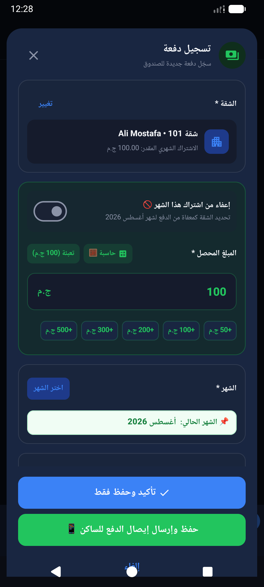
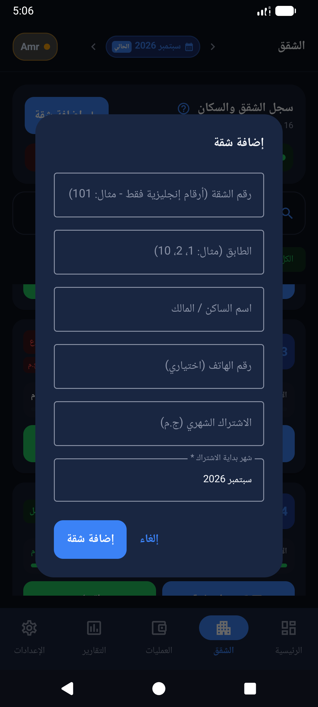

التحصيل والسداد الموزع
سداد شهر واحد أو سداد مجمع لعدة شهور (3 أو 6 شهور أو سنة كاملة) مع توزيع آلي دقيق للمبالغ والتحصيل المقدم، وتسجيل الإعفاءات الرسمية مع حاسبة سريعة مدمجة.
🏢 الإدارة المالية الذكية للعقارات واتحادات الملاك
النظام الأقوى والأشمل لأمناء الصناديق واتحادات الشاغلين: تتبع فوري للتحصيلات، تسجيل المصروفات والعهد المالية، إدارة ميزانيات المصعد والمشاريع المستقلة، وإرسال إيصالات سداد احترافية عبر واتساب في 3 ثوانٍ.
يعمل بدون إنترنت (Offline-First) 100% مع مزامنة سحابية فائقة الأمان، ودعم الدفع المحلي عبر InstaPay أو Google Play.

إدارة عقار بالدفاتر الورقية أو جداول الإكسيل التقليدية تسبب صداعاً مستمراً لأمين الصندوق: أوراق تضيع، فواتير تختلط مع البواب، إحراج مستمر عند المطالبة بالمتأخرات، وجدال لا ينتهي في جروبات الواتساب حول الحسابات. تم تصميم صندوق العمارة ليكون اليد اليمنى لمسؤول العقار: شفافية كاملة أمام السكان، وحساب فوري للمتأخرات حتى لو تغير الساكن أو تغيرت قيمة الاشتراك، وإدارة متطورة للمشاريع والصيانة، لترتاح أنت ويثق فيك الجميع.
⚖️ الفارق الحقيقي
شاهد كيف يوفر عليك التطبيق ساعات من الحسابات والتوتر والمواقف المحرجة مع الجيران.
✨ منظومة متكاملة بلا استثناء
تم بناء كل خاصية داخل التطبيق بعناية فائقة لتلبي الاحتياجات الواقعية لإدارة العمارات السكنية والكمبوندات.
سداد شهر واحد أو سداد مجمع لعدة شهور (3 أو 6 شهور أو سنة كاملة) مع توزيع آلي دقيق للمبالغ والتحصيل المقدم، وتسجيل الإعفاءات الرسمية مع حاسبة سريعة مدمجة.
توليد كروت إيصال سداد مصممة كصور أنيقة أو رسائل مخصصة بالاسم والشهر والمبلغ والمتبقي وإرسالها للساكن فوراً، مع إرسال تذكيرات بالمتأخرات بضغطة زر واحدة دون أي إحراج.
إدارة ميزانيات مستقلة تماماً للمصعد، دهان الواجهة، أو عزل السطح. تحديد حصة كل شقة وإمكانية استثناء أدوار معينة (مثل إعفاء سكان الدور الأرضي من صيانة المصعد) ومتابعة الفائض والفواتير.
تسليم عهدة مالية ومتابعة الفواتير المنصرفة المخصومة منها خطوة بخطوة، معرفة المبلغ المتبقي طرف المستلم لحظياً، وتصفية العهدة أو توريد المتبقي نقداً للخزينة بكشف حساب تفصيلي.
قسم مخصص بالكامل لإدارة شؤون وتبرعات مسجد العمارة أو المجمع: تسجيل التبرعات وتبرعات فاعلي الخير، فواتير صيانة التكييفات والسجاد، وتقارير سنوية وشهرية مستقلة لا تختلط بحسابات السكان.
فصل رصيد النقدية السائلة (كاش) عن الحساب البنكي للعمارة، مع ميزة التحويل بين الخزائن (إيداع بنكي أو سحب نقدي) بسلاسة دون تسجيلها كإيراد أو مصروف وهمي يحرف الميزانية.
في حال وجود عجز طارئ، سجل المبالغ المستلفة من أحد الملاك واحتسبها كالتزام دائن مستحق السداد (وليس إيراداً)، مع تتبع سداد الأقساط للمقرض حتى إغلاق السلفة بالكامل.
استخراج تقارير شهرية وسنوية معتمدة، كشف المتأخرات التراكمي، ودفتر اليومية الورقي الشامل (Paper Ledger)، مع إمكانية التصدير الفوري لملفات PDF جاهزة للطباعة أو شيت Excel كامل.
إمكانية تغيير بيانات الساكن أو تعديل قيمة الاشتراك الشهري وسريانها بدءاً من شهر محدد، مع الاحتفاظ التام بسجلات الشهور السابقة دون تكرار أو أخطاء تاريخية.
سجل كافة العمليات والمصروفات حتى لو كنت في جراج العمارة بدون اتصال إنترنت، وسيتم حفظ بياناتك فوراً، ومزامنتها سحابياً وتشفيرها بمجرد توفر الشبكة لحمايتها من الضياع.
📱 واجهة عصرية وسلسة
تنقل بين الأقسام لاستكشاف الشاشات الرئيسية المصممة لتسهيل مهمة إدارة الصندوق اليومية.
متابعة رصيد الخزينة الحالي، إجمالي التحصيلات، والمصروفات، ونسبة سداد اشتراكات الشهر الجاري بنظرة واحدة سريعة مع ملخص التحويلات البنكية والنقدية.
تصفح شقق العمارة وتعرف فوراً على الشقق المسددة والمتأخرة مع فلترة سريعة وإمكانية توليد الشقق بالأدوار دفعة واحدة وتعديل بيانات الاشتراكات.
سجل تحصيل الدفعة مع اختيار شهر السداد أو شهور متعددة مسبقة، وإرسال بطاقة إيصال دفع فورية على واتساب للساكن تحفظ حقه وتمنحك راحة البال.

📸 معرض الشاشات
شاهد تجربة الاستخدام الحقيقية من داخل التطبيق على أجهزة أندرويد.




💳 باقات مرنة تناسب الجميع
ابدأ مجاناً واستمتع بكافة الميزات، مع خيارات دفع محلية ودولية سهلة ومريحة.
جرب كافة ميزات التطبيق المتقدمة لعمارتك دون دفع أي رسوم مقدماً.
أفضل قيمة توفير: 15 شهراً بسعر 12 شهراً فقط عند استخدام كود الهدية.
مرونة تامة مع تجديد شهري مستمر وإمكانية الإلغاء في أي وقت بسهولة.
💬 آراء المستخدمين
تجارب واقعية لأمناء الصناديق الذين استعادوا راحة بالهم بعد استخدام صندوق العمارة.
"أهم ميزة أراحتني هي إرسال إيصال السداد على واتساب فور تحصيل الدفعة. أصبح الساكن واثقاً ويعرف رصيده المتبقي دون أي نقاش أو لبس."
"كنا نعاني عند صيانة المصعد وتجديد المدخل من خلط الفلوس. ميزة المشاريع الخاصة أتاحت لنا عزل ميزانية الأسانسير تماماً وإعفاء سكان الدور الأرضي بكل سهولة."
"إدارة عهدة البواب كانت دائماً مسببة خلافات حول الفواتير. الآن أسجل العهدة بالمليم مع كل فاتورة كهرباء أو نظافة وتتم التصفية بتقرير مطبوع."
🚀 انضم الآن مجاناً
حمّل تطبيق صندوق العمارة الآن من Google Play واستمتع بتجربة مجانية متكاملة لجميع المميزات دون أي بطاقة بنكية مطلوبة مقدماً.
❓ الأسئلة الشائعة
نعم 100%! التطبيق مبني بتقنية Offline-First، حيث يتم حفظ كافة البيانات محلياً على هاتفك بأمان، وتستطيع تسجيل المصاريف والدفعات حتى بدون أي اتصال بالإنترنت، وستتم المزامنة السحابية تلقائياً بمجرد توفر الشبكة.
بمجرد تسجيل أي سداد، يمكنك مشاركة إيصال دفع رسمي وموثق كصورة أو رسالة واتساب مع الساكن موضحاً به اسمه، رقم شقته، الشهر المغطى، والمتبقي عليه. كما يوفر كشف متأخرات تراكمي يحصر بالظبط الشهور المتأخرة دون أي احتمال للخطأ البشري.
يوفر التطبيق قسماً مستقلاً باسم "المشاريع الخاصة"، يتيح لك إنشاء ميزانية مستقلة لكل مشروع وتحديد حصة كل شقة، مع إمكانية استثناء بعض الشقق أو الأدوار (مثل إعفاء سكان الدور الأرضي من صيانة المصعد بضغطة زر واحدة) ومتابعة سداد الشقق وفواتير المشروع بشكل منفصل تماماً عن اشتراك الصيانة الشهري.
من خلال قسم "العهد المالية"، يمكنك تسجيل أي مبلغ تسلمه للبواب أو فني الصيانة. ويسجل التطبيق كل فاتورة يصرفها البواب مخصومة من العهدة، ليظهر لك الرصيد المتبقي معه لحظة بلحظة، مع إمكانية تصفية العهدة وتوريد المتبقي للخزينة بنقرة زر.
نعم بكل تأكيد! بالإضافة إلى الدفع الآمن المعتمد عبر Google Play (المحافظ الإلكترونية، فودافون كاش، والبطاقات البنكية)، يدعم التطبيق الدفع والتحويل المباشر بالجنيه المصري عبر شبكة المدفوعات اللحظية InstaPay لسهولة التفعيل الفوري دون الحاجة لكروت دولية.
بياناتك محمية تماماً؛ حيث تتيح لك المزامنة السحابية تسجيل الدخول واسترجاع كامل بيانات العمارة وسجلاتها في ثوانٍ معدودة على أي جهاز جديد، كما يمكنك في أي وقت تصدير نسخة احتياطية وحفظها على Google Drive أو مشاركتها.
نعم، يمكنك استخراج تقارير شهرية وسنوية، ودفتر اليومية الشامل (Paper Ledger)، وتصديرها مباشرة بصيغة PDF أنيقة قابلة للطباعة والمشاركة، أو تصدير شيت إكسيل Excel (.xlsx) كامل لمراجعته محاسبياً.